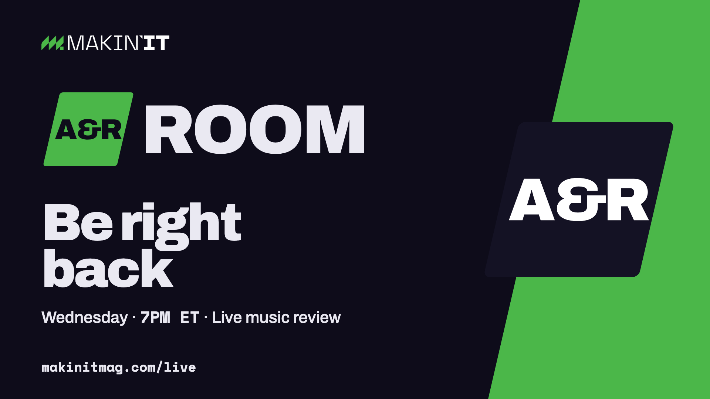
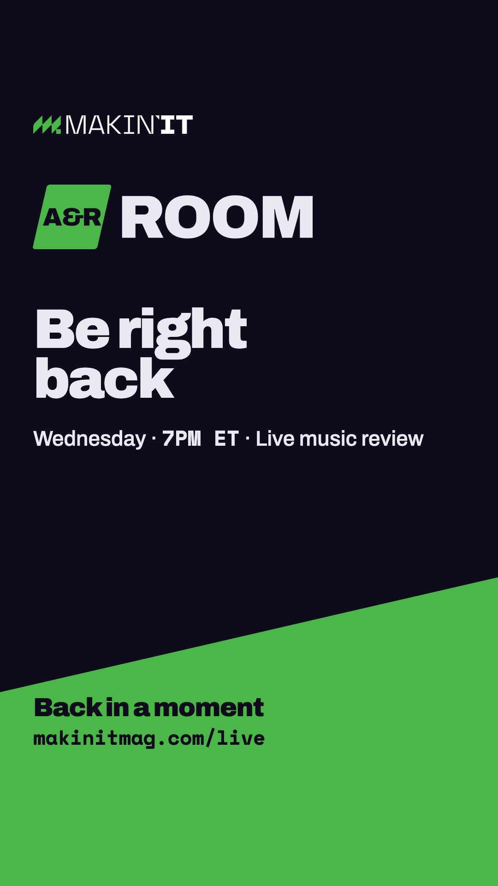
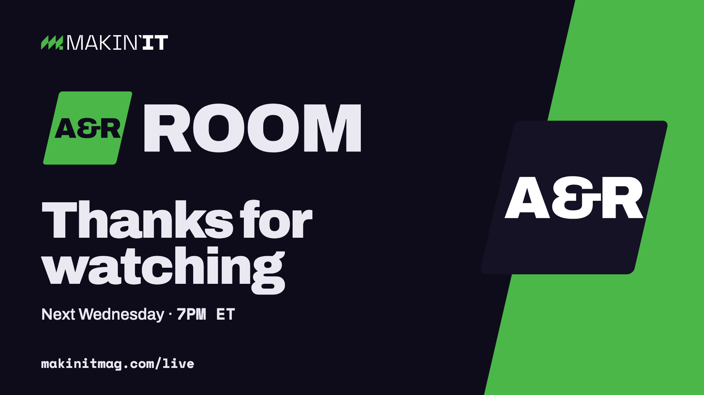
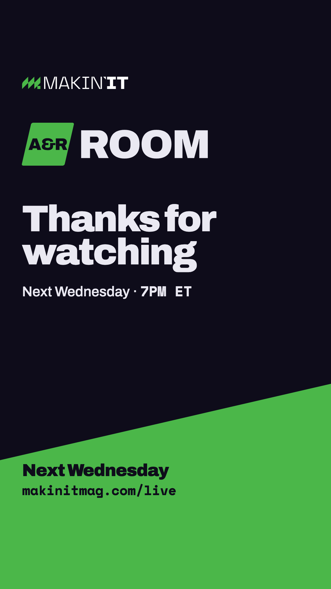
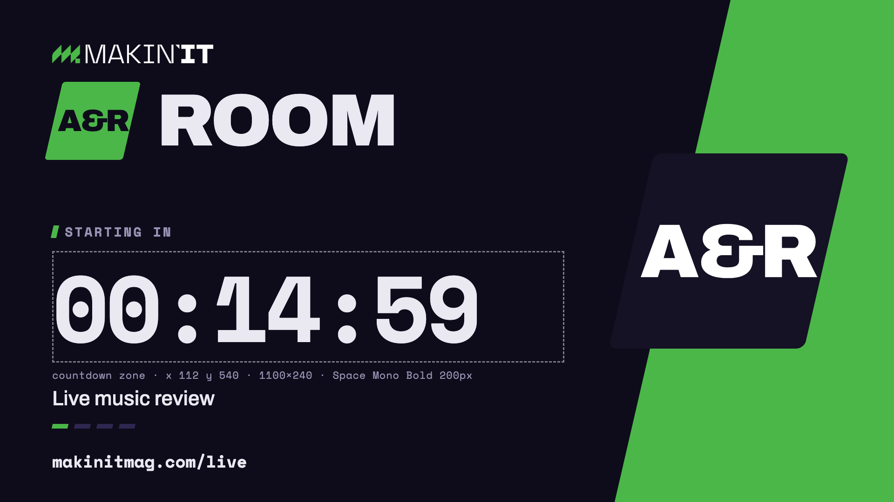
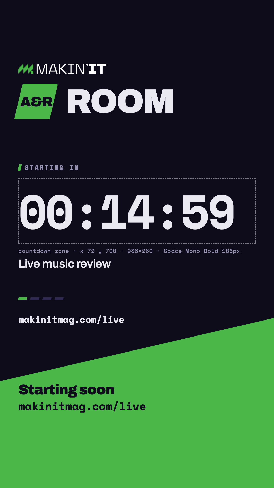

Makin' It · promo build order · stage 6 · for approval · 2026-09-13 · starting-soon loop added 2026-09-14
The break and sign-off screens for the broadcast (2.7), the 3-second logo sting (0.10), the show open and close (2.14) and a 15-second teaser (2.13). Added 2026-09-14: a 2.16 "Starting soon" loop for OBS with the countdown zone left empty. The screens are the Room key art with a different line. The motion is one time-axis page rendered to frames and encoded: nothing bounces or glows; the block wipes in along its own 13° edge, the word reveals behind a moving edge, the field rises along its cut. Copy is the approved ad copy.




public/brand/room/render.sh brb and end.

&label=Starting%20soon and the zone stays empty under a "Starting soon" label, for a day the timer is not set up.public/brand/motion/frames.sh starting → starting-wide.mp4, starting-story.mp4, the posters and the two guide stills.Screens: public/brand/room/room.html?screen=brb|end · motion: public/brand/motion/motion.html?piece=bumper|open|close|teaser|starting&f=&t= (add &play=1 to watch it run) · render: public/brand/motion/frames.sh